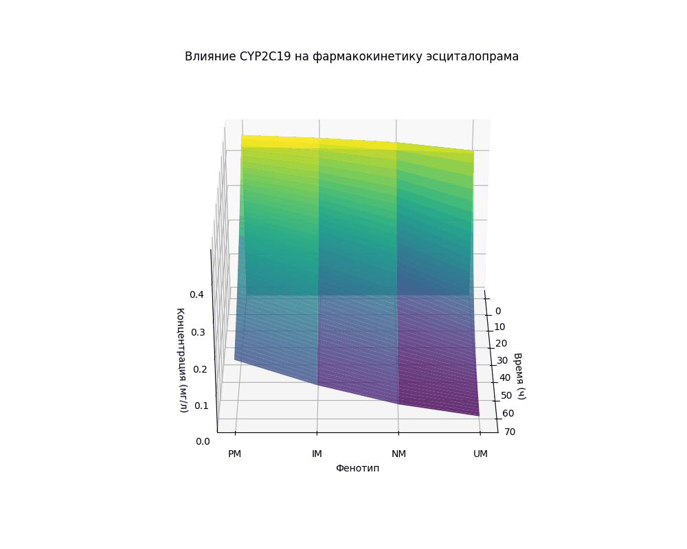
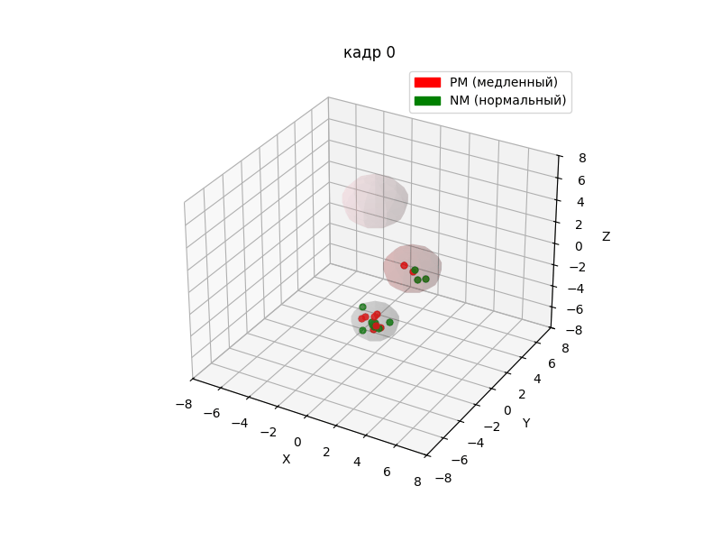
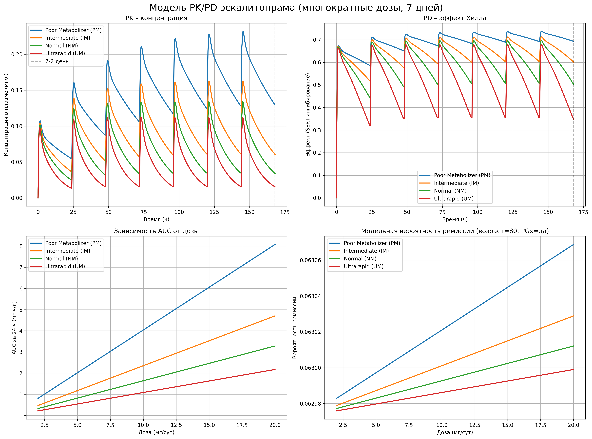
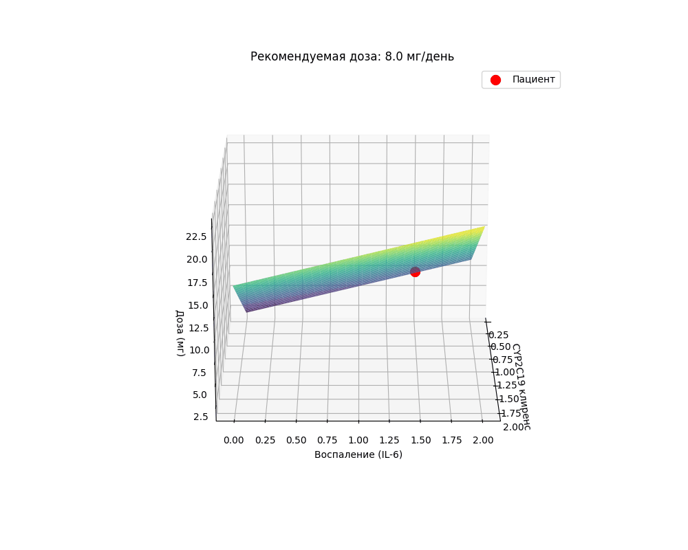

Why patients on identical escitalopram regimens respond so differently — and a CYP2C19-driven, AI-supported path from empirical prescribing to precision psychiatry, built for the population genomics of Kazakhstan.
Major Depressive Disorder affects more than a billion people, yet first-line SSRI therapy is far from uniformly effective. Under an identical protocol some patients remit, some see no effect, and many meet clinically significant adverse effects.
The gap. A modest probability of remission set against a high incidence of adverse events — nausea (15–21%), insomnia (8–13%), sexual dysfunction, hyperhidrosis, and, rarely, serotonin toxicity linked to impaired clearance. This gap is exactly what a personalized, metabolism-aware approach targets.
Response is shaped by a chain of biological events, not by diagnosis alone: how the liver clears the drug (pharmacokinetics) and how the brain responds to it (pharmacodynamics).
Escitalopram is cleared mainly by hepatic CYP2C19 via N-demethylation. Loss-of-function alleles *2 and *3 reduce enzyme activity; the promoter variant *17 increases it. The result is four metabolizer phenotypes with markedly different plasma exposure at the same dose.
Escitalopram blocks the serotonin transporter (SERT) encoded by SLC6A4. The 5-HTTLPR short/long promoter variant alters SERT expression. Evidence is inconsistent across ancestries, so we keep SLC6A4 as an exploratory component weighted below CYP2C19 — never used alone.
Chronic stress and cortisol can hypermethylate the SLC6A4 promoter, suppressing SERT even in long-allele carriers — a wild-type patient who still fails to respond.
Pro-inflammatory cytokines (IL-6, TNF-α, CRP) interfere with serotonin signalling and lower antidepressant sensitivity, linked to more ADRs and treatment resistance.
Pharmacogenetic status is not fixed: co-medications, smoking, or liver disease can make a normal metabolizer behave like a poor or ultrarapid one — hence dynamic monitoring.
| Phenotype | CL factor | Clearance | Exposure | Clinical signal |
|---|---|---|---|---|
| PM · poor | 0.4× | 2.4 L/h | Highest | Toxicity risk → lower dose / alternative agent |
| IM · intermediate | 0.7× | 4.2 L/h | Elevated | Individually tailored dose |
| NM · normal | 1.0× | 6.0 L/h | Reference | Standard dosing |
| UM · ultrarapid | 1.5× | 9.0 L/h | Lowest | Subtherapeutic → possible failure |
CL factors after CPIC 2023 / DPWG 2021; clearance values from Jukić et al., 2018 and Jin et al., 2010.


A two-compartment PK model feeds a Hill pharmacodynamic term and a logistic outcome model. Every parameter is drawn from published literature.
with \(\mathrm{AUC}=\int_0^{56}C(t)\,dt\), expressed per 1000 mg·h/L.
| PK / PD parameter | Value | Source |
|---|---|---|
| ka · absorption | 1.2 h⁻¹ | Jin et al., 2010 |
| Vc · central volume | 45 L | Jin et al., 2010 |
| CLpop · clearance (NM) | 6.0 L/h | Jukić et al., 2018 |
| kcp, kpc | 0.8, 0.6 h⁻¹ | Brouwer et al., 2022 |
| Emax, EC50, γ | 0.8, 0.02, 1.0 | Meyer et al., 2004 |
| Logistic coefficient | Value | Calibrated from |
|---|---|---|
| β₀ · baseline | −2.5 | GUIDED baseline |
| β₁ · AUC (per 1000 mg·h/L) | 0.2 | PRIME Care |
| β₂ · PGx testing | 0.6 | GUIDED + PRIME (OR≈1.82) |
| β₃ · age (per year) | −0.01 | STAR*D |
| w₁, w₂ · dose weights | 0.8, 0.2 | w₁+w₂=1 |

Generated directly from the equations and parameters above (RK4 integration of the PK ODEs).
Adjust genotype, age and inflammation. The plasma curve is integrated live from the PK ODEs; dose and remission follow the formulas above.

PGx-guided care shows modest but real absolute benefits. We report effects as they were measured — including non-significant primary outcomes — rather than the inflated relative figures often quoted.
| Study | Design | Verified result |
|---|---|---|
| CPIC 2023 | Guideline · CYP2C19 + others | Actionable CYP2C19 recommendations; insufficient evidence to prescribe on SLC6A4 / HTR2A alone. |
| GUIDED 2019 | RCT · N=1167 | Remission 15.3% vs 10.1% (p=0.007); response 26.0% vs 19.9% (p=0.013). Primary symptom outcome not significant (p=0.107). Absolute +5.2 pts. |
| PRIME Care 2022 | Pragmatic RCT · N=1944 | Remission over 24 wk OR 1.28 (1.05–1.57; p=0.02); fewer drug–gene-interaction prescriptions. |
| Hain 2025 | Peer-reviewed post-hoc | Faster remission HR 1.27 (p=0.015); response HR 1.21 (p=0.010). Supportive, not definitive. |
| STAR*D reanalysis | Retrospective · N>4000 | Protocol-defined first-step remission ≈ 25.5%; no PGx. |
Most trials ran in US / European-ancestry cohorts — supporting, but not substituting for, local prospective validation in Central Asia.
The Kazakhstani population has a mixed Eurasian structure, combining East-Asian and European allele frequencies. Foreign prescribing algorithms cannot be transferred without population-specific evidence.
| Modelled genotype | Frequency | Derivation |
|---|---|---|
| PM · *2/*2 | 2.9% | 0.17² |
| IM · *2/*1 | 28.2% | 2·0.17·0.83 |
| NM · *1/*1 | 68.9% | 0.83² |
| UM · *17 carriers | 8.5% | 2·0.83·0.05 + 0.05² |
The Kazakh source study established allele and genotype frequencies but not national poor/intermediate metabolizer prevalence — that requires full diplotype interpretation (*2, *3, *17). We therefore recommend routine PGx testing as part of a risk-stratified approach, not a universal mandate, supported by representative local genotype and outcome data.
A pharmacogenetic passport feeds a cloud AI-CDSS that computes two research indices — hepatic clearance kPK and synaptic sensitivity kPD — and returns a traffic-light recommendation adapted to the Kazakhstani context.
CYP2C19 (*2,*3,*17), CYP2D6 CNV, CYP2B6, ABCB1 · SLC6A4, HTR2A, BDNF (investigational) · optional microbiome & methylation.
Ensemble / probabilistic models with late or hybrid integration when modalities are missing.
Personalized dose index and a green / yellow / red traffic-light report with CPIC/DPWG evidence level.
Human oversight is mandatory; thresholds never auto-switch a drug.
1 · Buccal swab at initial consultation.
2 · qPCR genotyping (7-marker panel) at primary care / regional centre.
3 · Data to AI via HL7/FHIR → traffic-light report within 24–48 h.
4 · Physician receives dose / drug-replacement recommendation with CPIC/DPWG evidence level.
Integrates with MoH Clinical Protocol No. 29 by adding pharmacogenetic testing at the SSRI-selection step.
qPCR panel 8,000–14,000 ₸ (projected). Annual patient cost and savings are scenario projections pending MHIF tariff and hospital-data confirmation.
An Italian cost-utility model found CYP2C19 / CYP2D6 screening cost-effective at €75,000/QALY, with ICERs ≈ €60,000 and €47,000/QALY — justifying a local pharmacoeconomic study rather than direct transfer.
An educational assistant for mental-health and pharmacogenomics questions. It explains concepts — it does not diagnose, prescribe, or recommend a dose. In any crisis, contact local emergency services or a trusted professional.
Runs on Claude inside this page. If the AI endpoint isn't reachable (e.g. self-hosted without a backend), the assistant falls back to a built-in knowledge base for the suggested topics.